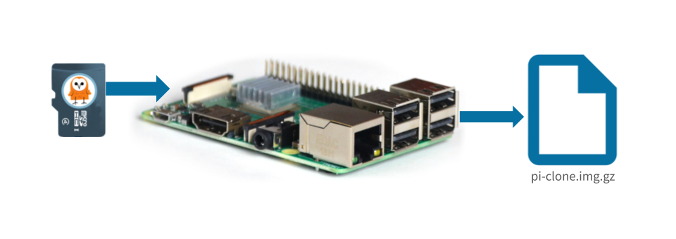

Create a disk image from a Raspberry Pi SD card
Once you have a Raspberry Pi setup and working just the way you'd like it to, with all the software and configuration settings, create a disk image so that it can be replicated on other Rasperry Pi devices.
The TL;DR (Too Long; Didn't Read)
- Why create a disk image?
-
Ensure that each new Raspberry Pi device has the exact same configuration.
Save time re-installing software on new Raspberry Pi devices.
Prerequisites
- Any Pi with Raspberry Pi OS installed (Tutorial: Learn how to setup a Raspberry Pi )
- SD card containing the Raspberry Pi OS, with all the software and configuration settings that you would like to clone (Tutorial: Learn how to install Pareto Anywhere on a Raspberry Pi )
- SD card reader
- USB key at least 2x the GB as the source SD card
Boot up Raspberry Pi Step 1 of 5
- Why use a Raspberry Pi to clone an SD card?
- There are several different ways to clone an SD card that will be OS specific. This tutorial assumes developers following this tutorial have a Raspberry Pi, instead of writing out different steps for Unix, Mac, and Windows.
-
Boot up the Raspberry Pi with the SD card containing the base Raspberry Pi OS. (not the card you would like to clone)
-
Connect to the Raspberry Pi with SSH or a monitor and keyboard.
-
Open a terminal on the Raspberry Pi.
Insert the source SD card Step 2 of 5
Using an SD card reader, insert the source SD card into one of the available USB ports on the Raspberry Pi
- Why use a Raspberry Pi to clone an SD card?
- There are several different ways to clone an SD card that will be OS specific. This tutorial assumes developers following this tutorial have a Raspberry Pi, instead of writing out different steps for Unix, Mac, and Windows.
- With the SD card reader inserted, identify the location of the card with the command: sudo fdisk -l
The output will include a list of block devices, including the SD card. The SD card will be identified as a block device, such as /dev/sda, /dev/sdb, etc...
It will appear similar to the following:
Disk /dev/sda: 7.36 GiB, 7901020160 bytes, 15431680 sectors
Disk model: Storage Device
While there are two partions on the SD card, (eg: /dev/sda1 and /dev/sda2),
the partition that will be cloned is the entire disk, not just one partition. As such, we are interested in the block device, not the partition.
The block device id will look similar to the following:
/dev/sda, /dev/sdb, etc..., it does not have a number at the end.
Insert the USB Drive Step 3 of 5
Insert and mount a USB Drive, making it available to the Raspberry Pi
- Why use a USB Drive?
- It is necessary to have enough storage to hold both the full image of the SD card, as well as the final shrunk and zipped file. Using a USB Drive will minimize the risk of running out of space during the cloning process, as most USB drives are larger than the SD cards used in Raspberry Pi devices. Using a USB Drive will also allow you to easily transfer the zipped image to another device, such as a laptop or desktop computer.
- Insert the USB drive into an available USB port on the Raspberry Pi.
-
Identify the USB drive with the command: sudo fdisk -l
The USB drive will be identified as a block device, such as
/dev/sda,/dev/sdb, etc... -
Once you've identified the drive (ie: sda, sdb, etc...) from the command prompt on the Pi, mount the drive to a directory on the Raspberry Pi with the command: sudo mount /dev/sdb2 /mnt
Note: The
/mntdirectory is a common location to mount external drives. If you have a different location you would like to use, you can change this to a different directory. The directory name will be referenced in a later step.
Clone the SD card Part 1
With the Raspberry Pi setup with the SD card connected and USB Drive mounted, it's now ready to clone the entire contents of the SD card to a single *.img file.
-
From the command prompt on the Pi, change to the directory where the image is located on the USB drive with the command: cd /mnt
Note: If you mounted the SD card to a different directory, change to that directory instead.
-
Use the
ddapplication to start cloning the SD card with the command: sudo dd if=/dev/sda of=my-pareto-anywhere.img bs=4M status=progress -
Once the
ddprocess has completed, you can remove the source SD card if desired, as it's no longer needed for this process.
Notes:
- This command requires root privileges
- The
ifparameter, eg:/dev/sda,/dev/sdb, is the location of the SD card, identified in Step 2. - The
ofparameter,my-pareto-anywhere.imgis the name of the file where the contents of the SD card will be written. It can be named anything you like, but it's recommended to use a name that is descriptive of the contents of the SD card, it will be referenced in a later step. It will be the same size as the SD card, so make sure you have enough space on the USB drive to hold the entire image. - This can take a long time; an 8 GB SD card took about 12 minutes to copy. The `status=progress` argument will display how many bytes have been written out during this process.
Shrink the image. Step 5 of 5
Install and run `pishrink.sh` to compress the cloned img file.
- What is PiShrink?
- PiShrink is an open-source script that will compress a pi image
- Why srhink the image?
-
A typical SD card will contain a lot of empty space. The
ddprogram will copy all of this empty space even though it's not really needed. Shrinking the image will remove this empty space, making the image smaller and easier to transfer to other devices.
Install PiShrink Part 1
From the command prompt on the Pi, complete the following steps:
- Download the pishrink script from github with the command: wget https://raw.githubusercontent.com/Drewsif/PiShrink/master/pishrink.sh
-
Add execute permissions to the pishrink script with the command: sudo chmod +x pishrink.sh
- Move the script to a folder for executables found in the path with the command: sudo mv pishrink.sh /usr/local/bin
Shrink the pi image Part 2
From the command prompt on the Pi, complete the following steps:
-
Change to the directory where the image is located on the USB drive with the command: cd /mnt
Note: If you saved the image to a different directory, change to that directory instead.
- Shrink and gzip the image with the command: sudo pishrink.sh -vz my-pareto-anywhere.img my-paretoanywhere.img.gz
- This process can take a long time, 15 minutes or longer!
- The
-vtells PiShrink to be verbose - The
-ztells PiShrink to gzip the image - The first argument,
my-pareto-anywhere.imgis the source image file - The second argument,
my-pareto-anywhere.img.gzis the destination image file that is zipped
That's it! You can now eject the USB drive from the Raspberry Pi, plug it into your laptop, and copy the my-pareto-anywhere.img.gz file to your hard drive, upload
it to a cloud storage service, or share it with others. It can be used to create a new SD card with Raspberry Pi Imager.


Tutorial prepared with ♥ by James Eberhardt.
You can reelyActive's open source efforts directly by contributing code & docs, collectively by sharing across your network, and commercially through our packages.Where to next?
Continue exploring our open architecture and all its applications.
-

-
Directory of Devices
Browse all device configuration tutorials and development guides.
-

-
reelyActive Developers
Browse all developer documentation and tutorials.
-

-
reelyActive
Together, let's make sense of things.